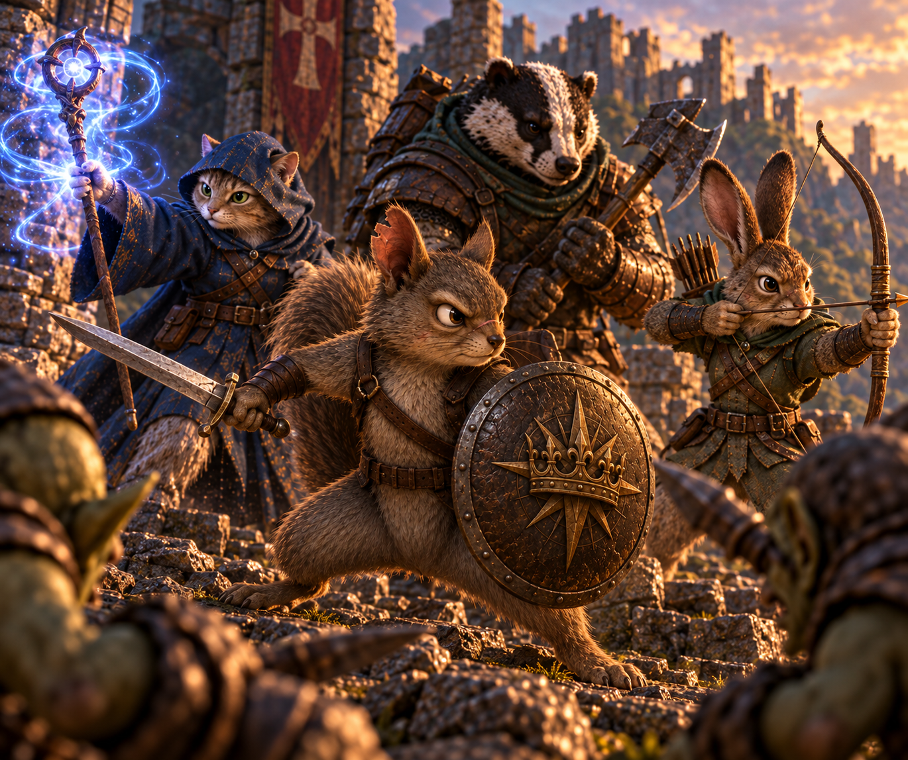
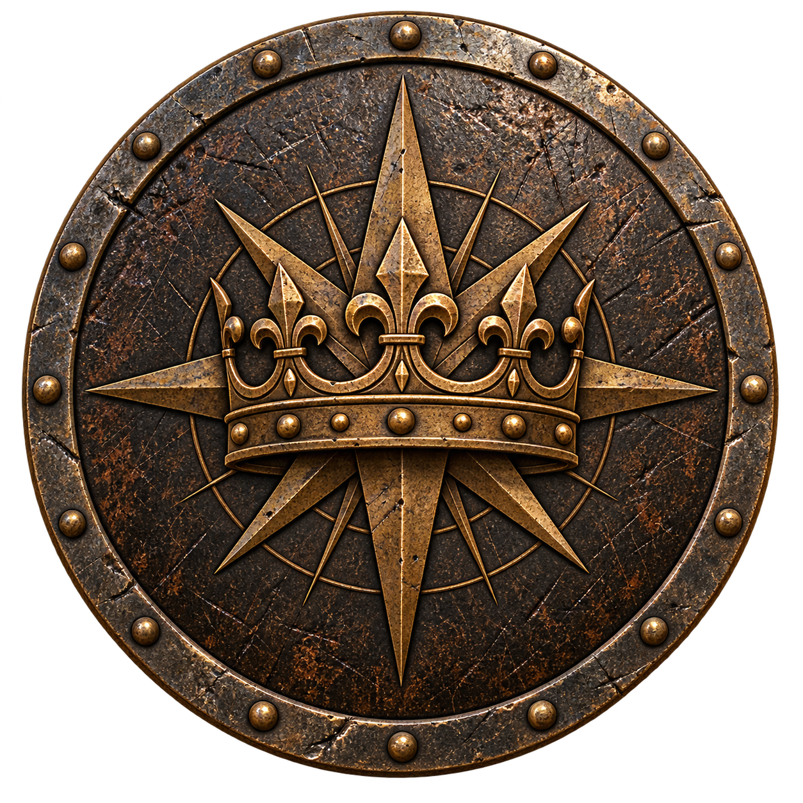
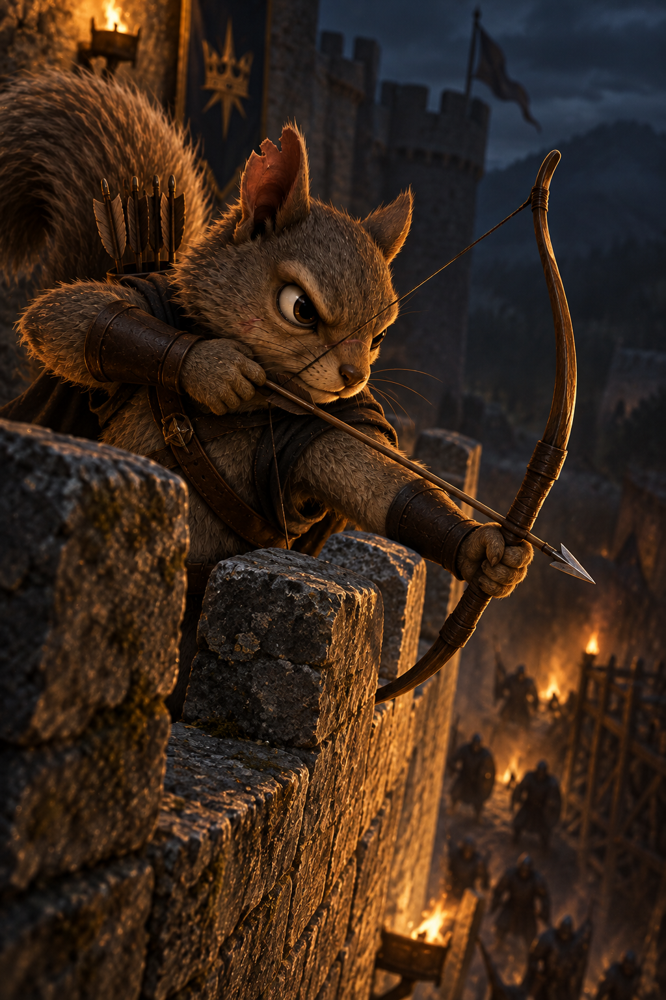
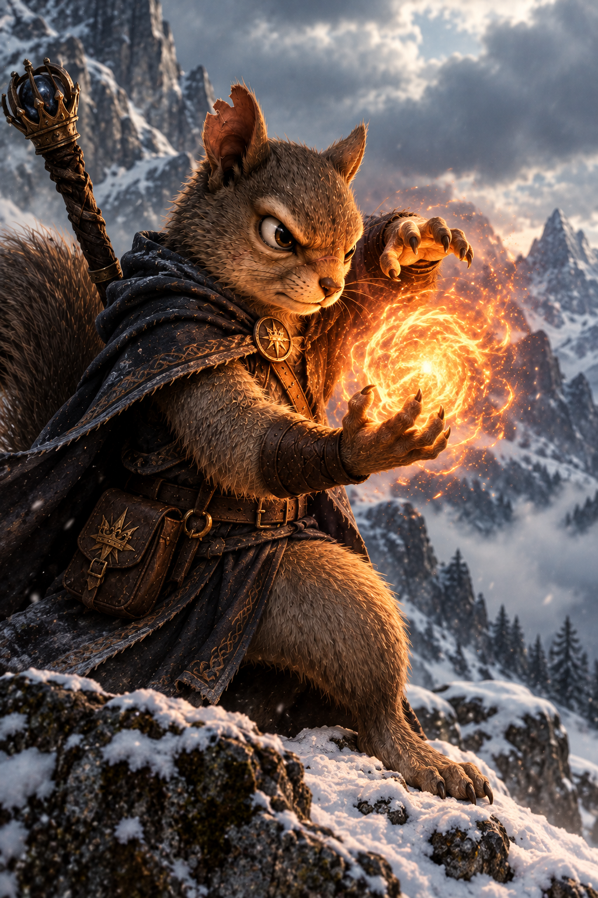
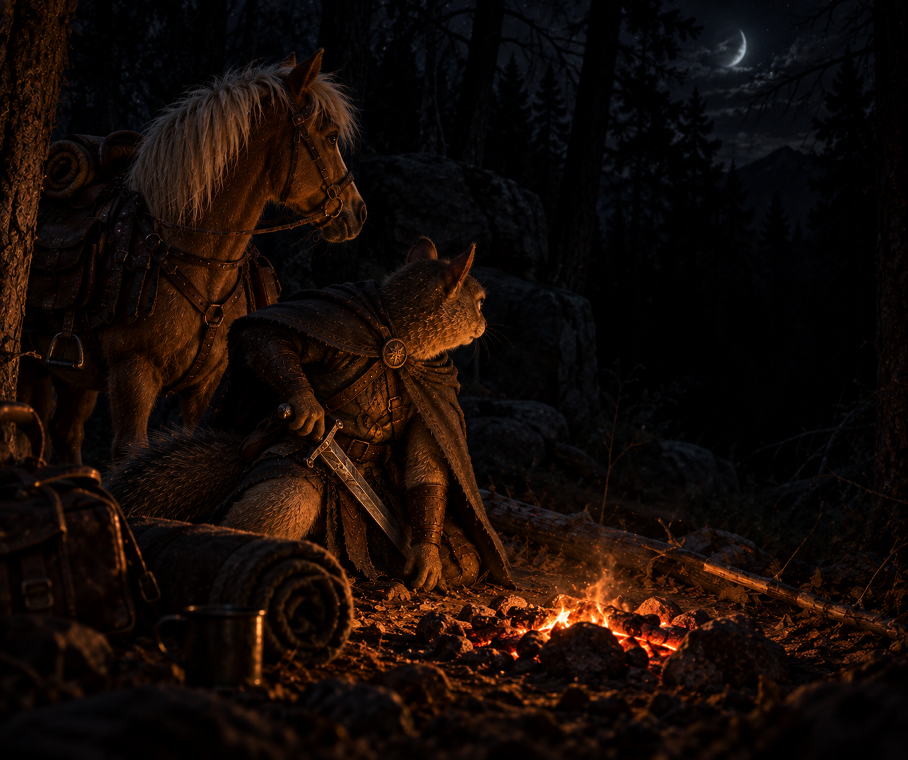

Pre-Release Playtest Rules
The world is broken. Darkness is real. The King is calling.
The world is broken. Darkness is real. The King is calling.
Old kingdoms have fallen. The light is dimmer. Dangerous things move in the shadows, and the land still bears the scars of what was lost.
In the ruins, people live, rebuild, and dream. Communities endure. Friendships are forged. Heroes rise — not because the world is easy, but because it’s worth fighting for.
You are not just a character sheet. You are a voice, a perspective, a force for change. Your choices echo beyond the dice.
Not as a prize, but as a calling — to stand, to strive, to leave things better than you found them. The road is long, the risks are real, but so is the hope.

First trip through? Read the rules in order. Mid-adventure? Use the Rule Index like a map and jump straight to the rule ID you need.
Complete rules · source CC_Ruleset.txt Ver. 202609190716
Quote a rule ID at the table. This page is a reading copy, not a second canon.
Crown & Call is built to be learned at the table. Read straight through once, then use the links below to jump directly to the rule you need.
Every rule ID below is a direct link. Use this as the table-side index when a question comes up.
COPYRIGHT & LICENSE NOTICE CROWN & CALL™ Pre-Release Playtest Version Copyright © 2026 Thomas Paige. All rights reserved. This document contains the unpublished and proprietary rules, mechanics, text, concepts, and other creative material comprising the Crown & Call tabletop roleplaying game system. This is a pre-release playtest document. It is provided solely for the purpose of evaluating, testing, discussing, and improving Crown & Call. No license is granted to copy, reproduce, distribute, publish, modify, adapt, translate, sell, sublicense, or create derivative works from this material, except as expressly authorized by the copyright holder. Playtesters may view, use, and discuss the rules for purposes of playtesting and may provide feedback to the creator. Playtesters may not redistribute the document or make its contents publicly available without permission. Crown & Call and associated names, logos, artwork, settings, characters, and other creative works are the property of Thomas Paige unless otherwise noted. FUTURE OPEN LICENSE It is the creator's present intention to release the Crown & Call game system under the Open RPG Creative (ORC) License following completion of development and playtesting. This document is not currently released under the ORC License. No rights under the ORC License are granted by this document or by making it available to playtesters. The creator reserves the right to determine which Crown & Call materials will be designated as Licensed Material and which will remain Reserved Material when the public release is made. Until an official public release and corresponding ORC License notice are published, all rights are reserved. Version: 202609190716 Last Updated: 19 Sept 2026 Last Updated by: Thomas Paige
CROWN’S CALLING Player Manual — Complete Rules
The world is broken. Darkness is real. The King is calling.
Crown’s Calling is a classless, single-die tabletop roleplaying game of courage, faith, danger, and adventure. You will face enemies, discover mysteries, wield weapons and magic, and make choices that matter. There are no classes or rigid paths. Your character becomes what you choose to make of them.
All you need to play is a single d20. The rules are simple by design. Roleplay comes first. The rules exist to help tell the story—not get in its way. When danger comes, combat is fast and brutal, and no character is guaranteed to survive.
Gather your companions. Take up your calling. The Crown awaits.
HOW TO READ RULE IDS Each rule has a letter and a number. The letter is the subject. The number is the rule inside that subject. Quote the ID at the table (for example, M7).
G is design and philosophy. O is leftover table procedure (recovery, ambush, dice modes, conditions, meditation).
These aren't just design notes. When two rules seem to pull in different directions, these principles tell you which way the game is supposed to lean.
Before dice touch the table, these principles answer the most important question: what kind of game is Crown & Call trying to be? Fiction leads. Rules support it.
The rules serve the story, not the other way around. When a situation is clear from the fiction, the GM may simply declare the result without a roll. Rolls are used when the outcome is uncertain and interesting.
Characters are defined by a small number of broad Capabilities rather than classes or long lists of narrow skills. Existing Capabilities should be used flexibly whenever they reasonably apply. There are no classes, professions, or prescribed character paths. A Capability describes what a character can do. It does not dictate who they must be.
Combat is dangerous. Every successful attack can produce a wound that immediately changes how a character approaches the rest of the fight. There is no slow hit-point attrition.
Players are encouraged to attempt interesting actions. The GM determines whether an action is possible and which Capability applies, but the default stance is to let players try.
Magic is wondrous and limited by the Caller's skill. Faith is relationship with God, not a resource that can be spent to compel divine power.
A priest, mage, warrior, scholar, thief, knight, healer, craftsman, or any other concept is a description, not a mechanical category. There is no required set of Capabilities or rules for any archetype.
A player who wants a priest might invest heavily in FAITH and describe Works as prayer or dependence on God. Another might build a warrior-priest with strong WEAPONS and FAITH. A priest might also be a scholar with high ACADEMICS, a Caller with high MAGIC, or all of these.
A character with high MAGIC might be a traditional mage, an alchemist, an artificer, a hedge wizard, or something else. A character with high WEAPONS and ACADEMICS might be a scholarly swordsman. The rules do not distinguish these concepts unless the player and GM want them to.
The question is not "What class is my character?" It is "Who is my character, and what are they capable of doing?" Build the character you want to play. The rules provide the tools. You provide the character.
Callings are a gift given to those learned enough to understand and use them. They come from God, but using a Call is not commanding God. It is like throwing a rock off a bridge and telling God to make it fall and splash. The rock falls because that is how the world works.
In Crown's Calling, magic is a force of nature, like gravity. It simply is. Mortals who have learned MAGIC may shape that force through Callings (see M1-M11).
Petitioning God through prayer and FAITH is a different matter. God is not a force to be aimed. The GM decides at the time what, if anything, comes of a sincere petition. Guidance, Critical Opportunities, and Petition for the Dead (F1-F6) are the current mechanical handles. They never obligate God.
Play the intent of a rule, not a wording hole. If the intent is clear, that intent wins even when a clever reading would get you more. The GM decides when the table disagrees, then play continues. Talk it out after the scene.
CAP 0 doesn't mean helpless. It means ordinary competence. Your points show where your hero rises above ordinary people.
A hero is not a class. A hero is a collection of strengths, weaknesses, convictions, training, and choices. Capabilities put numbers to those strengths without deciding the character for you.
Every character has eight Capabilities, each rated from 0 to 20:
A score of 0 is the baseline for ordinary people. Scores of 1 or higher mark increasing heroic mastery. A Capability left at 0 is still usable at ordinary competence; it is not a gap or a disability.
New characters begin with all Capabilities at 0 and receive 15 Capability Points. These points must be distributed across exactly five Capabilities. Each of those five Capabilities must receive a minimum of 1 point and a maximum of 5 points. The other three Capabilities remain at 0 (ordinary non-hero competence; see C2).
Example: A player might create
or
or
There are no traditional levels. The GM awards additional Capability Points when characters accomplish significant milestones. Players may place these points wherever they wish, including in previously undeveloped Capabilities. A soft campaign ceiling of roughly 80–100 total points is recommended so that long-term investment decisions remain meaningful.
Wounds reduce WEAPONS, RANGED, ATHLETICS, THIEVERY, and SENSE by the character's current Wound Level. MAGIC, ACADEMICS, and FAITH are unaffected by wounds.
Speed does not suffer wound penalties. Calculate Speed from Base Speed + full ATHLETICS (T3), even when ATHLETICS rolls are reduced by C5.
Wound Level is a number of steps:
Use the worst current wound. Do not add the binary W8 values as the penalty.
Creatures that can suffer more than one MORT and remain standing add +1 Wound Level for each MORT after the first (see W7, W9). Example: 1 MORT is -6, 2 MORT is -7.
Don't roll because dice are fun to roll. Roll because success and failure would both make the next moment interesting.
When the outcome matters and nobody knows what happens next, the dice enter the story. Most uncertainty comes down to one roll and a clear comparison.
When the outcome of an action is uncertain, resolve it with a d20 roll. Add the appropriate Capability and any relevant modifiers.
If another character or creature actively opposes the action, use an Opposed Roll (R2). Both sides roll, and the higher total wins. Opposed Rolls resolve themselves. The GM does not set a Target Number.
If no character or creature actively opposes the action, use an Unopposed Roll (R3). The player rolls against a Target Number set by the GM (see R5).
When the outcome is clear from the fiction, no roll is necessary. The GM may simply declare the result (see G1).
When two characters directly compete or one acts against another’s resistance, both sides roll:
The higher total wins. The difference between the two totals is the Margin of Victory (MoV).
There is no static Armor Class. Defense is always an active roll.
Example: A warrior attacks with a longsword (WEAPONS 7, 2H Wielding Modifier +1). The defender tries to parry with a shortsword (WEAPONS 5, 1H Wielding Modifier +1).
When no one is actively opposing the action, the player rolls d20 + Capability + modifiers. The GM sets a Target Number using R5 and decides whether the result succeeds. Circumstances, tools, time, and conditions may adjust the Target Number.
A defender chooses an appropriate means of defense when circumstances permit: weapon, shield, ATHLETICS (dodge/evade), or another reasonable action. The GM has final say on whether a proposed defense is plausible, but the general philosophy is to allow creative attempts.
When no one is actively opposing an action, the GM sets a Target Number. Meeting or exceeding that number succeeds. Use the column that matches the dice in play (see O3).
4d6 drop 1 means roll 4d6 and drop the lowest die (O3 Stable). These TNs keep about the same success rate as the 1d20 column across typical CAP scores. They are not a perfect match at every CAP.
The GM may also rule partial success, success with cost, or interesting failure. A margin of 5 or more either way may mark an especially strong success or failure.

Steel is supposed to make you nervous. Aggression lets you press your luck, but every point you put into attack leaves the door wider open.
Steel is dangerous here. A single clean blow can change a fight, and every choice between attack and defense matters.
A character may set Aggression anywhere from −10 to +10 (0 is neutral). Setting it is free.
You may set a non-zero Aggression only while adjacent (within 5 feet) to an enemy in the fight. If you are not adjacent, Aggression is 0.
If you begin your Turn already adjacent, set it at the start of the Turn. If you become adjacent during your Turn, you may set it in PREP before you strike.
Aggression applies only to melee offense and melee defense, including an unarmed or dodging defense.
Ranged attacks never use Aggression. Defense against a ranged attack never uses Aggression.
A ranged attack (thrown or launched) may be made only against a target 10 feet away or farther. Inside 10 feet, fight in melee or withdraw (W1b).
You are Engaged while adjacent to an enemy in the fight who is willing to oppose you.
Leaving a square that would break that adjacency takes your entire ACT. You MOVE only if the withdraw succeeds. You do not strike this Turn.
Roll once against each adjacent enemy who opposes the withdraw: d20 + WEAPONS or ATHLETICS, Opposed. An enemy may let you go and skip that roll.
Win every opposed withdraw: take a legal path out. Lose any of them: you stay in the square. No free hit.
Aggression is separate (W1). You may set −10 before the attempt. That is a choice, not a cost of leaving.
Every weapon or piece of equipment has separate Wielding Modifiers for one-handed and two-handed use. These modifiers are applied to the relevant roll.
The full playtest list of melee weapons, launchers, and projectiles is W11.
A character may use a weapon one-handed even if the modifier is heavily negative; the modifier simply reflects how ineffective that choice is. Launchers may forbid one-handed firing even when a 1H melee line exists.

No hit-point arithmetic here. Win the opposed roll, find the MoV, then let weapon and armor tell you how much of that wound gets through.
The Margin of Victory determines the raw severity of the wound:
These thresholds are the current baseline and may be adjusted by the GM during playtesting.
Each weapon has a maximum Wound Severity it can inflict, regardless of how high the MoV is. A knife cannot produce a Mortal wound no matter how well the attacker rolls.
Armor does not make a character harder to hit. It reduces the severity of the wound received:
Example: An attack that would inflict DEEP becomes LITE against chainmail, or SEVR against an unarmored target.
For ordinary (Scale 1) characters, a Mortal Wound renders the character unconscious and dying. The character does not die from that Mortal Wound itself. Any subsequent wound received while Mortal kills the character. This creates a short, high-stakes window in which allies may intervene.
When a Scale 1 character takes MORT, they drop. The GM secretly rolls the dice in play (O3). That total is how many seconds they have before they bleed out. Do not tell the table the number.
Anyone may stem the bleed. It takes two free hands and the whole ACT at the body. No Capability is required. If you arrive in time they stay unconscious and Mortal, but they are no longer bleeding out. They are not healed. Any wound while Mortal still kills them.
If no one stems the bleed in time, they die. The GM reveals that when the clock ran out or when someone reaches the body.
The GM may set the number by fiction instead of rolling when a hidden die would be cruel or silly.
There are no wound ranks above MORT.
Wounds never combine past MORT. A second MORT stays a second MORT. It does not become a new tier.
Some larger or stronger creatures can take more than one MORT before they die (see W9). Those creatures stay on their feet until they reach their MORT quota. Each MORT after the first adds +1 to their C5 Wound Level (MORT is 6; two MORT is 7).
Healing that peels one GRAV off a MORT removes one MORT box (see W8).
Player characters track their own wounds openly. Wounds combine and break in pairs up and down the ladder:
Two wounds of the same severity become one wound of the next higher severity. Healing or other reduction subtracts a stated piece; rewrite what remains as the fewest wounds that match that value.
Example: A character with only SEVR is healed of 1 LITE. SEVR = DEEP + 2 LITE. Remove 1 LITE. Remainder = DEEP + LITE.
Example: A character with only MORT is healed of 1 GRAV. MORT = 2 GRAV. Remainder = 1 GRAV. The character is no longer Mortal.
GM aid: the ladder is binary. Counting in FLSH units:
Only the character's worst current Wound Level normally imposes the Capability penalty (see C5).
Scale is how many Mortal wounds defeat a creature. Scale does not raise Capability scores.
Larger creatures may carry heavier weapons. That can mean a higher wound ceiling and a better wielding modifier. Scale itself does not add wound steps.
A character may use multiple weapons during one ACT when reasonably possible. Attacking with two weapons can therefore produce two separate attack rolls.
Melee attack rolls this Turn use the Aggression you set. Melee defense this Turn subtracts that same Aggression. Ranged rolls ignore Aggression (W1). The two rolls may be against one target or two if the fiction allows.

Thrown and launched weapons share RANGED, but they don't behave the same. Check the projectile, the launcher, and the distance before you roll.
Ranged attacks are THROWN or LAUNCHED. Both use the RANGED Capability. A ranged attack needs 10 feet or more to the target (W1a).
THROWN The object is the weapon. Use that weapon's Wielding Modifier and Wound Ceiling. The roll is RANGED, not WEAPONS. Thrown attacks take −1 for every 10 feet to the target.
The GM may allow a thrown object that is not a listed weapon. Treat it as Stone or Improvised, or as the nearest listed weapon.
Example: A knife at 30 feet is −3. The same knife at 200 feet is −20. The attempt is legal; the math is the cost.
LAUNCHED A launcher and a projectile are two items. The projectile supplies the attack's Wielding Modifier and Wound Ceiling. The launcher supplies effective range, the range penalty, which projectiles it may use, and whether it may be fired one-handed.
You may fire only a projectile on that launcher's list. Range penalty starts after effective range.
LOADING Sling, shortbow, longbow, light crossbow, and blowgun: loading is PREP. The ACT fires.
Heavy crossbow: spanning is the ACT. Fire on a later Turn. You may not span and fire on the same Turn.
One-hand firing is illegal except a spanned heavy crossbow. A launcher used as a club is a melee attack (WEAPONS) and uses the launcher's melee line, not the projectile.
HEAVY CROSSBOW A Heavy Bolt fired from a heavy crossbow gains +1 wound step after MoV, then apply ceiling and armor. Light Bolts from a heavy crossbow do not gain that bonus.
The GM may rule a shot past any listed range is impossible.
Legal ammo:
Launchers:
Projectiles:
A Stone is a rock from the ground (Thrown, LITE). A Sling Stone is sling ammo (Launched, DEEP). They are not the same item.
DEFAULT WEAPONS, LAUNCHERS, AND PROJECTILES

MOVE, PREP, ACT. Keep those three words in your head and most Turns become easy to adjudicate.
A fight is not a queue of statues waiting their turn. Movement, preparation, protection, and action flow together inside a short, violent Round.
A Round represents up to seven seconds of activity. Once every character and relevant NPC has completed a Turn, the Round ends and a new one begins.
Each Turn consists of three parts that may be interwoven:
Speed = Base Speed (determined by species) + ATHLETICS, rounded up to the nearest 5 feet. Typical human Base Speed is 30 feet. Alpha playable species is human. Other species are not in this book.
If the GM says you cannot move like that with what you are carrying, you cannot. There is no encumbrance math.
Example: ATHLETICS 7 → 30 + 7 = 37 → rounded up to 40 feet.
On a 5-foot grid, Speed in squares equals Speed divided by 5. Up to half of those squares (round down) may be diagonal. The rest must be orthogonal (N, S, E, or W). A diagonal still costs one square.
Adjacent means the eight squares around you, including diagonals. Melee reach is adjacent unless a weapon says otherwise.
Example: Speed 50 is 10 squares. At most 5 may be diagonal; the other 5 must be orthogonal.
A character may forgo their ACT to move up to their Speed a second time during the same Round.
At the beginning of combat the GM rolls 1d20:
Each side then chooses the order in which its members act.
Instead of taking a Turn, a character may HOLD. When the character later re-enters the initiative order, they choose any position. The new order persists until someone HOLDs again. NPCs follow the same rules.
During PREP on your Turn you may declare "I protect [name]" or "I protect [name] from [enemy]." You cannot start this after your Turn is over.
Leftover movement may be used only for this rule.
Protection lasts until you take the hit, or until your next Turn starts, whichever comes first.
You may protect only against a melee attack aimed at the person you named.
Open ("I protect Ted"): the first melee attack on Ted that you can reach, you must take.
Named enemy ("I protect Ted from the ogre"): you must take the hit only when that enemy melee-attacks Ted.
To protect, reserved Speed must place you in a square adjacent to both the person you named and the attacker. You move there and become the target. Resolve the attack as a normal defense roll (R4).
You may Protect only if reserved Speed can put you in the legal square and you could legally be the target of that same melee attack once you arrive.
If the GM says there is no path, you cannot protect.
You do this at most once per Turn. If several people have declared Protect on the same person, they take hits in the order of declaration.
After you protect (successfully or not) you stay where you arrived. Your next Turn begins there. If that square is adjacent to an enemy willing to oppose you, you are Engaged (W1b). You do not stroll off. Withdraw is the ACT.
The GM may give a modifier when someone is behind cover or is concealed. Use a Capability that fits (often RANGED to hit, SENSE to spot). The number is for this moment. It is not a standing bonus.

Calling is powerful because it works within creation. Its limits matter. They give a Caller problems to solve instead of buttons to press.
Magic is part of creation: wondrous, dangerous, learnable, and bounded. A Caller shapes what already exists; he does not command the Creator.
Magic is expressed through Callings. In the world, magic is a created force of nature, like gravity (see G7). Using a Call is learned skill, not a command issued to God.
The alpha book uses a controlled list. The 20 Combat Callings in the appendix are that list. Each name shows (MAGIC N): you need MAGIC at least N to use it. That number is access only. It does not change MoV or the M6 ceiling.
Say what you are doing from the list ("I call Flame at that enemy"). You may use only listed Callings you qualify for. A new Calling is a written playtest add, not something invented in the moment. G4 still lets you try ordinary actions. It does not let you invent a Calling mid-fight.
The power and effectiveness of a Call scale with the character’s MAGIC Capability. Magic does not automatically allow a character to bypass the normal power curve of the game.
Each listed Call shows (MAGIC N). That is the MAGIC score required to use it. The number does not change MoV or the M6 ceiling. You cannot use a Call whose MAGIC number is higher than your MAGIC.
An Area Call is one Call, not a copy of the same Call on every target. The Caller names every target included in the blast.
The blast is a single Opposed Roll. The GM chooses the defender from the named list. That defender is the strongest link: the best relevant defense among those targets. For a damaging Call that is the highest MAGIC (see M7). If two or more tie, the GM picks one of them.
If the Caller wins, the virtual wound from that one MoV is split among all named targets rather than applied in full to each. If the Caller loses, the blast fails and no named target takes that Call's wound.
Split guideline:
Apply the split first, then each target's M6 ceiling and armor (see M6). The Caller cannot pick a weak target to splash a stronger one. Including the strong target means beating that target.

Gathering trades safety and freedom for stored power. If the scene won't let you be still, silent, and committed to the work, it probably won't let you Gather.
A Caller may Gather by spending consecutive Turns completely still: no MOVE, no PREP, no ACT, and no communication.
Maximum Gather is 3 Rounds. That stores 3 extra Callings. On the release Turn the Caller may also use the Call of that Turn, for a maximum of 4 Callings.
Gathered power may be held up to 1 minute. Holding does not add more Callings. After 3 Rounds the Caller must remain in the Gathering state until the power is used or lost: no movement and no communication.
Release consumes the entire Turn. All stored power must be used on that Turn. There is no MOVE and no PREP. Unused store is lost when the Turn ends.
If the minute expires unused, the store fades.
If the Caller is attacked while Gathering or holding:
Example: Gather 3 Rounds, then on a later Turn release 4 Callings and do nothing else that Turn.
Some groups enjoy mapping MAGIC scores to titles for flavor:
These titles are purely descriptive and carry no additional mechanical effects unless the GM decides otherwise.
Damaging Callings have a base Wound Ceiling of DEEP.
The Caller's MAGIC raises that ceiling:
MoV still determines the raw wound. The ceiling only limits how severe that wound can become. Armor then adjusts severity as usual.
This bonus does not apply to non-damaging Callings. Area Callings split power first (M3), then apply the ceiling to each target. Gathering does not raise the ceiling further.
Damaging Callings are Opposed Rolls of the Caller's MAGIC versus the target's MAGIC.
Martial attacks are not defended with MAGIC. They are defended with WEAPONS, a shield, or ATHLETICS as usual (see R4).
A target with MAGIC 0 still rolls d20 + 0.
Narrow exceptions: - Arcane Shield may add to the defense it was Called to aid. - Knockback or trip effects may still allow ATHLETICS to stay standing. - Illusions may be resisted with SENSE.
A Caller may convert a damaging Call into healing instead of wounding the target. Area Callings (M3) cannot be converted. Only a single-target damaging Call may use this rule.
The Caller must announce this intent and name the willing ally (or self) before rolling. The Opposed Roll is MAGIC vs an enemy in the fight (M7). A friend, a willing target, a bound prisoner, or the ally you mean to heal cannot be the opposed creature. You cannot Call at an ally to feed this rule.
The GM decides who counts. The spirit of the rule is a foe still in the exchange who can still defend. The helpless are not a convert-heal dummy.
If the Caller wins, determine the virtual wound from MoV and the M6 ceiling, before the enemy's armor. Do not apply that wound to the enemy. Instead heal the named ally one step lower:
If the Caller loses the Opposed Roll, no one is wounded and no one is healed. Rewrite the ally's remaining wounds using W8.
A converted MORT result peels one GRAV. It does not clear two GRAVs in one Call. If that leaves the ally at GRAV or less, they are no longer Mortal.
Range in feet equals 5 times the Caller's MAGIC. Area equals the Caller's MAGIC in 5-foot squares (25 square feet each).
The Caller paints those squares in any contiguous shape (block, line, hook, snake). Squares must touch on an edge. Allies may be left out by leaving their squares unpainted. Every painted square must be within range of the Caller. The Caller needs a path of unblocked squares; a wall ends the snake.
Anyone standing in a painted square is a named target for M3. Two people in one square are both targets.
Calling is visible unless a Call says otherwise. Enemies can see the Caller work and can see which squares the effect occupies. Gathering (M4) is obvious: the Caller is still and doing nothing else.
Every Call lists only the requirements it needs. A Call may use any of the following. Unlisted requirements do not apply.
A Call can be performed only when every listed requirement is met.
A shield is not armor for the ARMOR tag. It may occupy a hand and so block MOTION or MOTION x2.
MEDITATION and combat do not mix. If a Call lists MEDITATION, it cannot be used as a combat ACT.
Example: Bearing the Burden (O5) is TOUCH x2 and TIME 1 minute. It does not list MEDITATION.
Example: A Call tagged MEDITATION, TIME 15 minutes requires a meditating Caller and uses 15 minutes of that day's Meditation budget.
Gathering (M4) always requires MOTION x2. The Caller is still, silent, and uses both hands on the work. Gathering has ARMOR Leather unless a specific Call says otherwise.
Release uses each Call's own tags. If a released Call lists WORDS and the Caller is Mute, that Call cannot be released until Mute is resolved. Other stored Callings with no WORDS tag may still be released.
Faith matters here, but God is never a spell list. Petition leaves room for divine action without handing the player a supernatural vending machine.
Faith matters, but it is never a lever attached to God. These rules give faith a place at the table without reducing divine action to a spell list.
A natural 20 on a combat roll creates a Critical Opportunity. A combat roll is an Opposed Roll made to attack or defend in a fight: WEAPONS, RANGED, a shield, ATHLETICS used to dodge, or a damaging Call. Jumps, locks, lectures, and other unopposed tasks are not combat rolls.
The player chooses one:
To bank Guidance, the player rolls d20 + FAITH. If the total is greater than 20, the character gains 1 Guidance Point. A character may never have more than one Guidance Point banked at a time. If the banking roll fails, the opportunity is lost and cannot be applied to the original roll.
A banked Guidance Point may later be spent to add the character's FAITH to a combat roll (see F1), even after seeing the result of that roll. Guidance does not add FAITH to unopposed tasks. Petition for the Dead is its own rule (F6).
A natural 1 may introduce a meaningful complication, but it does not automatically cause the action to fail if the character’s total still wins the Opposed Roll.
Faith may enable supernatural Works such as healing, but divine power is not mechanically controlled or guaranteed by the player. God is not a resource. Prayer and Petition are not Callings. Prayer never copies a Call. It can change a circumstance the GM already thought was possible. The GM makes a rational ruling at the time (see G7).

Death should still mean something. Petition exists for extraordinary moments, not as a routine reset button.
When a character dies, a surviving character may Petition God on their behalf. This is an extraordinary appeal, not a routine ability.
The current preferred resolution is simple:
The petitioner’s FAITH does not automatically modify this roll. A banked Guidance Point may be invoked if the player chooses. Repeated successful restorations during a campaign become progressively more difficult (the GM may add increasing bonuses to their roll). The GM may require the petitioner to make a Promise or commitment; God remains sovereign and is never obligated.
These rules are where consequences live: wounds take time, conditions matter, and getting home can be an adventure of its own.
These procedures handle the hard edges of adventure: recovery, conditions, ambushes, meditation, and the consequences that remain after the swords are sheathed.

Healing has a clock. Rest buys time; tending helps; bearing transfers the cost. Nobody drinks a bottle and forgets the sword wound ever happened.
Characters recover wound value as time passes. Recovery is a clock, not a gift. Nothing in these rules restores a body to new in a moment. Converted Call healing (M8) spends a blow that could have wounded an enemy. Bearing (O5) moves wound value; it does not erase it. Tending only changes which clock the patient uses.
Resting means lying still, as in a bed or on a bedroll. It is not eating, talking, visiting, or keeping watch. Sleep is not required.
These rates do not stack. Use only one at a time. Recovery pauses in combat. When combat ends, the clock resumes. Reduce remaining wounds with W8.
TENDING A character with SENSE or ACADEMICS of 1 or higher may Tend another character. Tending takes a full hour of work. The tender is not Resting or Meditating during that hour. For that hour the patient uses the Resting rate even if they are traveling or otherwise Active. Tending does not stack with Meditation. Tending does not create extra wound value. There are no potions or Callings that skip the clock.
Example: A DEEP wound is 4 FLSH.
This rule replaces Full Rest.
There is no formal surprise rule. The GM handles ambushes and unexpected situations through roleplay, positioning, and Aggression.
The GM may choose the dice used for Opposed Rolls to shape volatility:
Modes may be mixed by character or by encounter. They change only the dice. CAP, Aggression, wounds, and the rest stay the same.
Throughout this book, "1d20" means a die roll. When a mode other than Lethal is in play, replace that 1d20 with the dice for that mode. "Roll 1d20 + CAP" under Risky is "roll 3d6 + CAP." Under Stable it is "roll 4d6, drop the lowest, + CAP."
Unopposed Target Numbers use the matching column in R5.
Example: Against ordinary guards the GM might use Risky for the guards and Stable for the heroes so Capability matters more than luck.
One condition, one effect. Two different conditions may stack if the GM says both apply.
ENTANGLED You cannot MOVE. You may still PREP and ACT. Break free with an Opposed ATHLETICS or THIEVERY roll as your ACT (or when the fiction allows). Covers being grappled or bound.
PRONE You are on the ground. Standing costs your MOVE. While Prone, WEAPONS, RANGED, and ATHLETICS are at -2. Melee attacks against you gain +2.
BLIND You cannot see. Sight-based SENSE fails. Attack rolls and defense rolls that need sight are at -4.
DEAF You cannot hear. Spoken information does not reach you. You cannot use or understand shouted commands.
MUTE You cannot speak audibly. You cannot give spoken commands. Gathering already forbids communication (M4).
AFFLICTED A harmful bodily state (poison, disease, similar). While it lasts, take -2 to ATHLETICS, THIEVERY, and SENSE. The source of the affliction sets duration.
IMPEDED The ground or the situation hinders you. Speed is halved (round down to 5 ft). Jump, climb, and similar ATHLETICS tests are one step harder (R5).
A character with MAGIC 5 or higher may Call to take another's wounds. This is not a combat Call. It takes one minute. Both of the Caller's hands must rest on the target the whole time.
The Caller may move any amount of wound value from the target to himself. The target loses that value. The Caller gains the same value. Then combine with W8.
The burden is real. If the transferred wounds leave the Caller Mortal, he drops, unconscious and dying (W6).
Example: A companion is Mortal (32 FLSH). The Caller bears 16 FLSH. The companion is left at GRAV. The Caller is at GRAV.
Example: A companion has 32 FLSH. The Caller bears all of it. The companion is clear. The Caller is Mortal and falls.
A character with FAITH 1 or higher may meditate up to FAITH x 15 minutes each day.
While meditating, recover 1 FLSH every 15 minutes. Meditation does not stack with Active or Resting.
While meditating, the character is unaware of their surroundings. They may walk or travel. They cannot keep watch or do work that needs attention.
If attacked:
Ranged attacks: you cannot meaningfully defend. Defense die is 1. Add CAP and modifiers as usual.
Meditation is Faith, not Magic. MAGIC does not grant minutes or the Meditating rate.
Once you've learned the game, bookmark this section. It's the lantern you reach for when the table goes quiet and everyone looks at the GM.
When play is moving quickly, start here. This section gathers the numbers and procedures most often needed at the table.
CAPABILITIES (0–20)
RESOLUTION
COMBAT
TURNS
MAGIC
FAITH
RECOVERY
CONDITIONS (O4)

If a rule slows the story instead of supporting it, tell us. This is a playtest. The game gets better because people actually put it on the table.
The rules are still being forged. Play them hard, find where they bend, and remember that the goal is not machinery—it is adventure.
Crown’s Calling is still a living design. Numerical values—exact MoV thresholds, starting CAP Points, Aggression range extremes, Scale MORT quotas, and critical details—should be tested at the table and adjusted as needed.
The first goal is not a perfect rulebook. The first goal is a game that people actually want to sit down and play: one in which capable characters feel capable, dangerous enemies feel dangerous, wounds matter, clever ideas are worth attempting, magic feels wondrous, and Faith remains meaningful without becoming a mechanism for controlling God.
The rules should get out of the way when the players start having fun.
Take up your calling. The Crown awaits.
— End of Player Manual —
← Return to Crown & Call Home · Rule Index · Back to Top ↑
Ver. 202609202145 · source ruleset 202609190716 · © 2026 Thomas Paige · playtest, not for redistribution